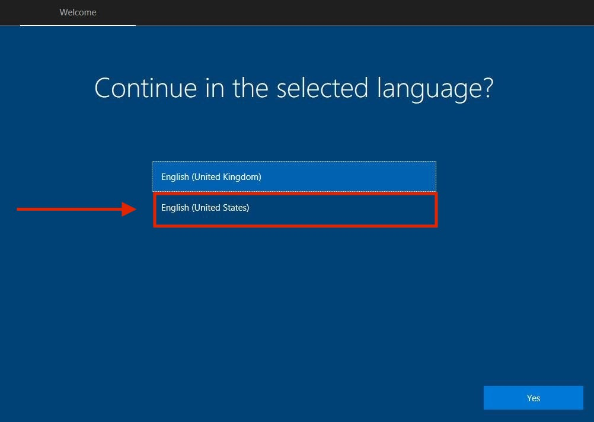
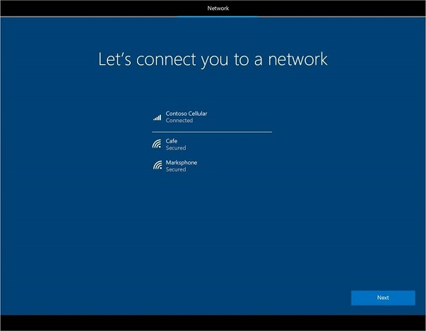
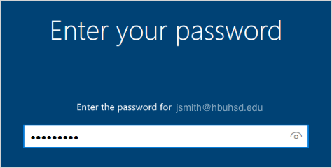
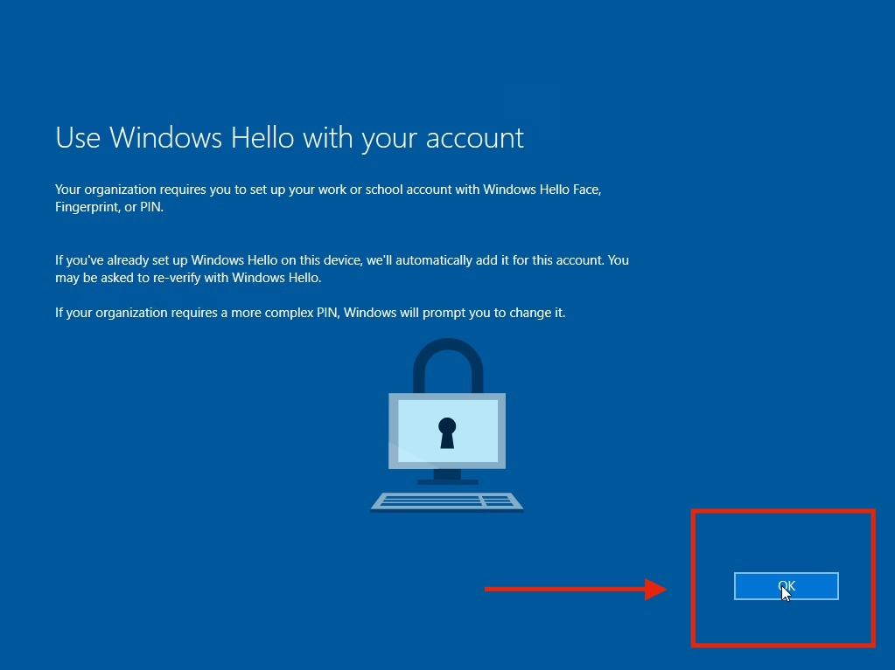
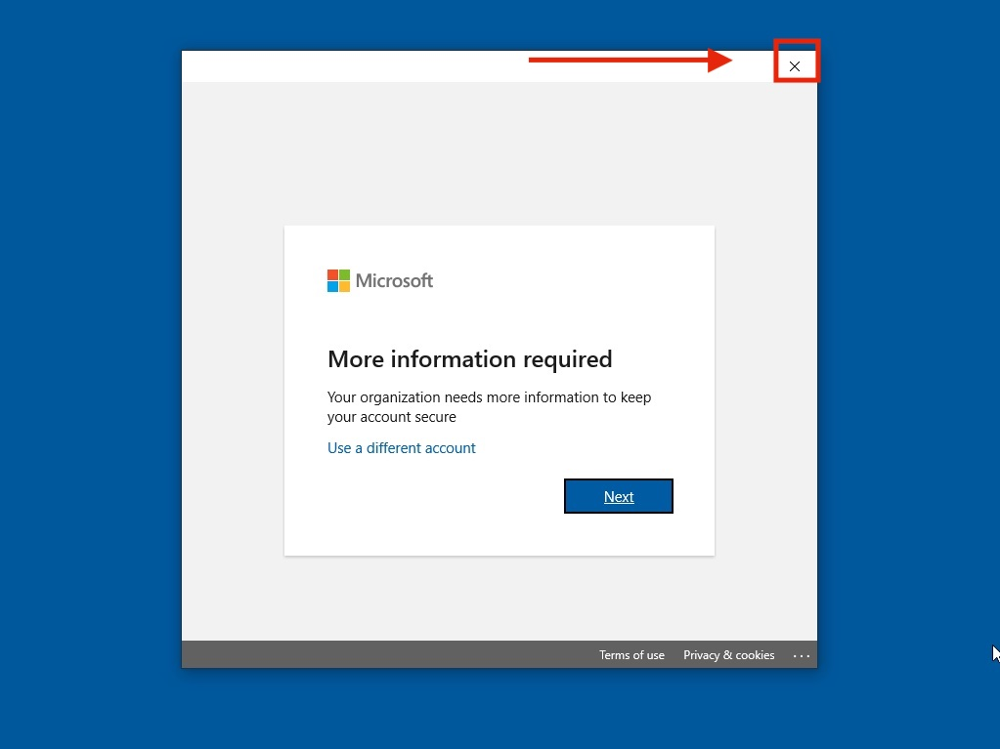
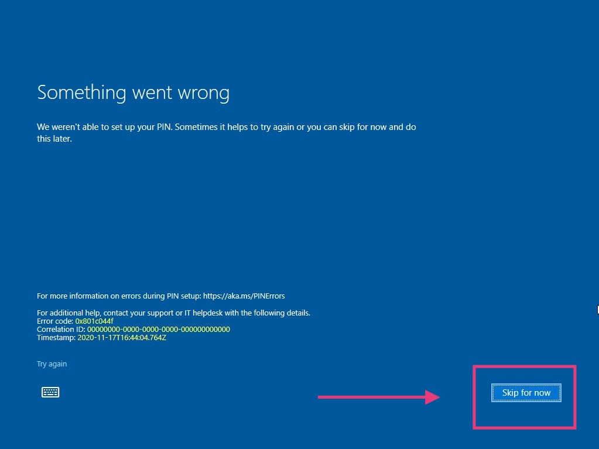
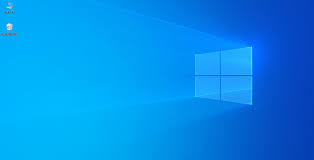
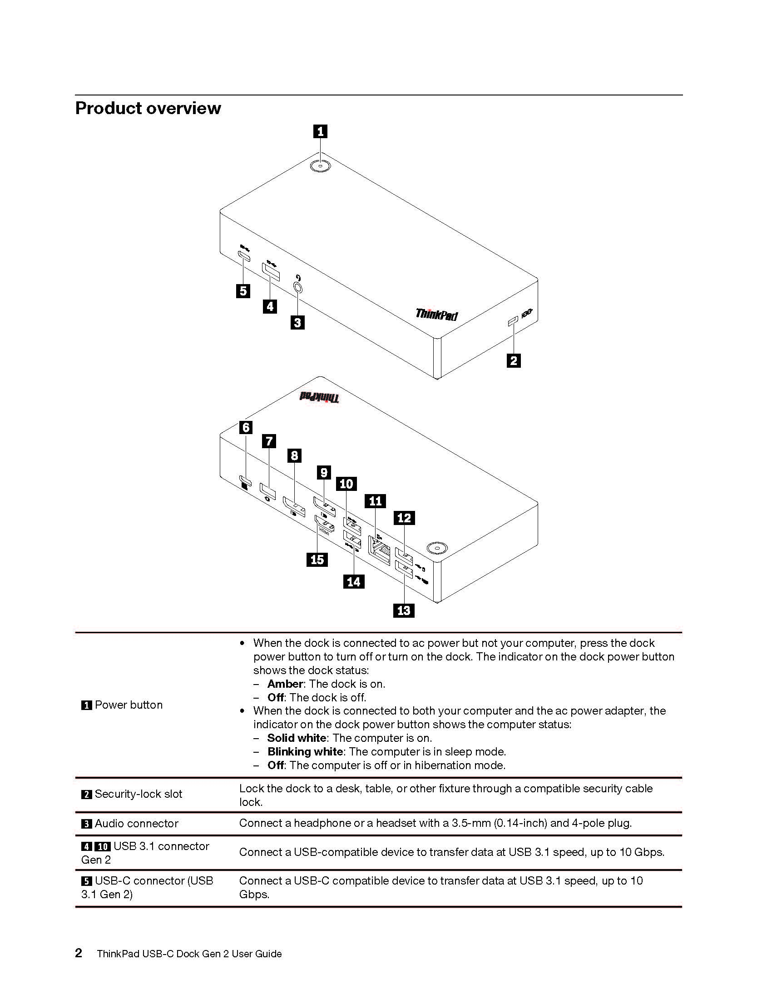
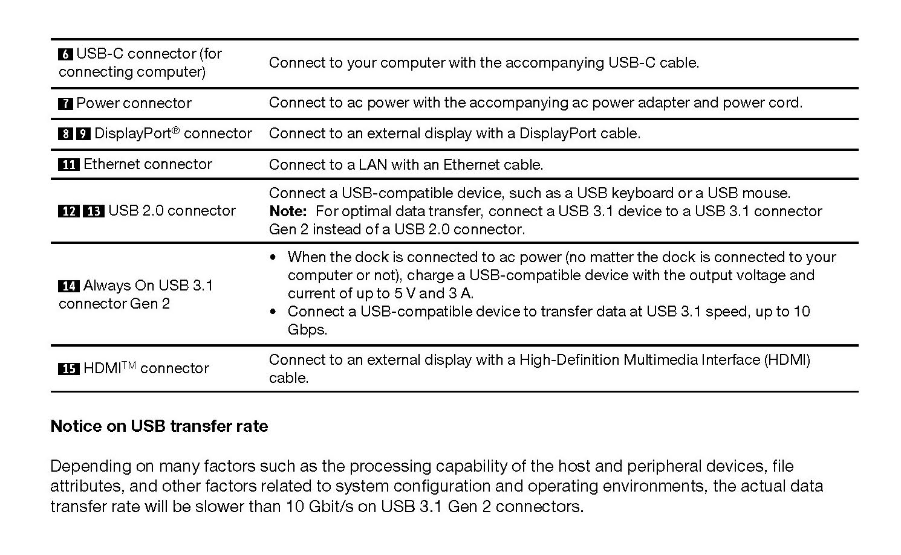
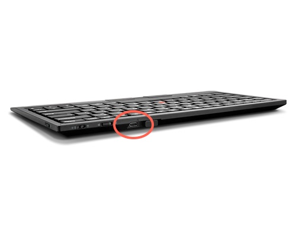

Windows Devices
Windows Enrollment
Step 1: Select your region
First screen to pop up will say “Continue in selected language?”
• English (United States) is selected automatically. (Image below is an example)
• Click Yes at bottom right of screen.

Step 2: Select your region
The first thing to set is your region. This sets your time and date automatically so features such as time zones or day and night cycles for night light can work effectively.

Step 3: Choose your language keyboard
The next screen is the default and secondary keyboard layouts . Here is where you specify what language you want as your keyboard. You can change this at any time.

Step 4: Choose your Second Keyboard Layout
Here, you can add a second keyboard layout if you need it. Otherwise, you can just press skip.

Step 5: Set up for an Organization
Select Set up for an organization.

Step 6: Join a Network
Join a network that has internet access. Location does not matter. If you are on campus, you can connect to:
WiFi Name: HBUHSD-BYOD
WiFi Password: hbuhSD#education!

Step 7: Sign into your Microsoft Account
On the Sign in with Microsoft screen, type your HBUHSD Microsoft Account. This should be the same email as your gmail. An example would be jsmith@hbuhsd.edu.
On the Enter your password screen, type your Microsoft account password. Note, this could be different from what you use to log into Gmail. If you are unsure, please contact the IS HelpDesk for assistance. (#52 on Office Phones)

Step 8: Choose your School Site
Your device will now automatically start the HBUHSD enrollment process. On the Choose Your Group page, please select what schoolsite you are picking the device up from.
Step 9: Miscellaneous Settings
Finish up the rest of the setup. Here you can choose your Privacy Settings & Activity History. Disabling both will not cause any issues.


Windows will now start configuring everything. Please allow it to grab the computer's assigned configuration.

After everything is done, you will be presented with the Use Windows Hello with your account screen. Click on OK. From there, when the Microsoft window comes up, press on the X on the top right. You will get a Something went wrong screen. Go ahead and click on Skip For Now on the bottom to proceed to your Desktop.
  
You should now land on your Desktop. Please allow a few minutes for a configuration to take effect. This will involve a couple of restarts. You are welcome to use it while it finishes.

Step 10: Finalizing
After the configurations are done after a couple of restarts, your computer will now be ready to go. Press Control+Alt+Delete at the same time to access the login screen.

Use your Microsoft Account to log in.
After the restart, log back in and our HBUHSD software package should automatically start downloading. If you are on a hotspot, it is recommended that you find a different source for internet so you don't use up all of your data. You are now all good to go.

Accesories Guide
Setting up your Docking Station.
Please watch the embed video for instructions on how to setup your teacher bundle.
 

To install the dock, start by connecting the AC power to an outlet. The charger will go into #4 in the diagram above. From there, you can connect the USB-C to USB-C cable to the back of the dock on one side and then connect the other side to the computer.
Video Timestamp: 1:20
Lenovo Docking Station User Guide
ThinkPad X1 Presenter Mouse User Guide
ThinkPad TrackPoint Keyboard II User Guide
ThinkPad X1 Presenter Mouse
This 2-in-1 accessory combines the functionality of a mouse with a handy presenter. Control PowerPoint or PDF slides using gyro technology and intuitive buttons, and make your points clearly from across the room with a virtual laser pointer and highlight & magnify capabilities. Crafted for comfort, the V-shaped mouse provides room to rest one’s palm while the index and middle fingers are positioned over the buttons. Perfectly portable, the narrow body and soft edges fit pockets and bags without bulging. You can connect this mouse to your computer using Bluetooth or the 2.4G USB receiver.


To charge this device, plug in the supplied cable to the charging point pictured above. Two hours of charging will provide 2 months of use.
ThinkPad TrackPoint II Keyboard
The ThinkPad TrackPoint II Keyboard translates the ThinkPad notebook’s iconic typing experience into a stand-alone device. True to form, it features the same dish-shaped ergonomic keycaps for comfort, as well as an integrated TrackPoint for easy navigation in tight spaces without a mouse. It’s versatile and reliable Bluetooth or Wireless Nano USB Dongle allows up to 2 devices to connect, and supports both Android and Windows. Even the visually impaired can enjoy the TrackPoint II, thanks to its 6-point entry support. You can connect this mouse to your computer using Bluetooth or the 2.4G USB receiver as well.
Features & Benefits
-
Features dish-shaped ergonomic keys for comfort
-
Versatile and reliable Bluetooth or Wireless Nano USB Dongle allows up to 2 devices to connect

To charge this device, plug in the supplied cable to the charging point pictured above. 15 minutes of charging will provide 1 week of use.
Connect a Bluetooth device with your PC
To pair a Bluetooth headset, speaker, or other audio device
Turn on your Bluetooth audio device and make it discoverable. The way you make it discoverable depends on the device. Check the device or visit the manufacturer's website to learn how. Usually, you can hold down the Bluetooth buttons to start the pairing process.
*On your PC, select Start > Settings > Devices > Bluetooth & other devices > Add Bluetooth or other device > Bluetooth. Choose the device and follow additional instructions if they appear, then select Done.
*Your Bluetooth device and PC will usually automatically connect anytime the two devices are in range of each other with Bluetooth turned on.